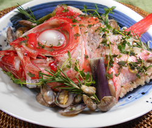

金目鯛とアサリのハーブ蒸し
- 調理時間：30 分
- （一人当たり）
- カロリー：232kcal
- たんぱく質：25.0g
- 脂質：12.4g
- 炭水化物：1.5g
- 塩分：2.3g


＜２人分＞
- アサリ
- 200g
- 金目鯛のアラ
- 半身(200g)
- ニンニク（みじん切り）
- 1片
- パセリ（みじん切り）
- 適宜
- ローズマリー、タイム
- 各3枚
- オリーブオイル
- 大さじ1
- 白ワイン
- 大さじ3
- 塩、コショウ
- 各少々


- 金目鯛はウロコをとり、熱湯をかけて臭みをとる。
アサリは殻をこすり合わせて洗っておく。 - 耐熱皿に金目鯛、アサリをのせ、ローズマリー、タイムの葉、ニンニクを散らす。
- 白ワイン、オリーブオイルを回しかけ、塩、コショウを振り、蒸し器で5～10分ほど蒸す。（火が通るまで）
- 蒸し上がったらパセリを振りかけ完成
金目鯛とアサリのハーブ蒸し
金目鯛は１年を通して脂がのったおいしい魚ですが、特に脂がのる１２月～２月が旬といえます。定番の食べ方は煮付けですが、ブイヤベースやムニエルなどの洋風料理とも相性の良い魚です。
栄養面ではリンの含有量が多く、魚類ではトップクラス。リンはカルシウムと結合して骨や歯を形成します。その他、ＤＨＡなどの不飽和脂肪酸も豊富。脂も旨味も余すことなく堪能していただきたい。